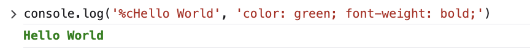

%c to apply styling to console.log outputThe %c placeholder is used to apply css style to console.log output. The styles are only applied to the text following the placeholder.
console.log('%cHello World', 'color: green; font-weight: bold;')

The %c placeholder can be used more than once. See:
console.log('%cGreen %cBlue', 'color: green;', 'color: blue;')